株式会社プログリット / 代表取締役社長 岡田祥吾

SPEAKER
趣味: キックボクシング、釣り、ゴルフ
今日は会社説明はほとんどしません。
「就活の勝ち方」の話をします。
これ、何の時間だと思いますか？
皆さんが生涯で仕事に使う時間です。
10時間 × 5日 × 4週 × 12か月 × 43年
小学校から大学までの授業時間の約7倍
それでは、この時間を
どう過ごすか？
就職活動とは、
10万時間をどのように
使うかを決めること。
10万時間をすごす意思決定。
では、何を基準に
選べばいいのか？
「自分の市場価値を上げる」
市場価値とは、あなたのスキル・経験・知識に対して
企業が「払ってもいい」と思える対価の大きさのことです。
1年前と今の違い
資料作成
1日かかっていた → AIで30分
コーディング
エンジニア数人月 → AIで数日
データ分析
専門チームに依頼 → 一人で完結
「安定した仕事」は
もう存在しない
たった1年で、仕事のやり方が根本から変わった。
この変化は止まらない。
だからこそ、変化に適応し続けられる力＝
市場価値を高めることが重要。
会社に依存するのではなく、
自分自身の市場価値を高めること。
それが、最大のリスクヘッジです。
市場価値を
どう高めるか？
市場価値
需要の大きさ
汎用性
供給の少なさ
希少性
市場価値
需要の大きさ
供給の少なさ
需要の大きさ（汎用性）の観点
自分の会社・部署の中だけで通用するスキルは、市場価値を高めにくいです。
供給の少なさ（希少性）の観点
誰もが当たり前に選ぶ道は、市場価値を高めにくいです。
では、どのような選択をすると
市場価値が高まるのか？
業界平均を凌駕するスピードで、
自力成長している会社を選べ
戦略から実行まで、
すべてに責任を持てる会社を選べ
 市場の波に乗っているだけ
市場の波に乗っているだけ
業界全体が伸びているから成長している
業界のトレンドが変わった時に成長する力がありません。今は良くても1年後どうなっているか分かりません。
 自分たちの力で成長している
自分たちの力で成長している
競合が横ばいの中で、独自の力で伸びている
他社にはない知見が蓄積され、どこでも通用する力が身につきます。

上流のみ — 戦略だけ
失敗しても「実行が悪かった」と言えてしまい、学びが浅くなります
下流のみ — 実行だけ
失敗しても「戦略が悪かった」と言い訳でき、成長につながりにくいです
全部やる — 戦略・実行・検証
全ての結果が自分に返る。成長スピードが圧倒的に速くなります
売上高71億円見込み
東証グロース市場に上場
売上・利益・時価総額No.1
新たな市場を創出
でも、プログリットは
"英語の会社"で終わりません。
ここから、プログリットは大きく変わります。
MISSION
世界で自由に活躍できる人を増やす
日本の強みは、「人」だ。
世界には、ものすごく広大な土地があり、豊富な資源があり、
膨大な人口を抱える国がある。
しかし日本は、国土は狭く、資源も十分ではない。
それでもこれほどの大国になれたのは、「人」が強いからだ。
真面目に取り組む姿勢、自制心、完璧を目指す美意識、
他者へのリスペクト、コミュニケーションの丁寧さ。
人の可能性は無限大であり、この可能性を最大化することこそが、
日本の力を最大化する最高のレバーだと考えている。
教育こそが国家の競争力であり、企業の成長エンジンであり、個人の選択肢を決める土台になる。
教育とは、国家の人的資本であり、産業の新陳代謝であり、一人ひとりが自分の人生を自分で選べるようになる力だ。
だからこそ私たちは、人の可能性を最大化し、テクノロジーの力で科学と仕組みを用いて成果を再現性を持って出し続ける。
企業として圧倒的に成長し、国力を上げるレバーとなる存在です。
プログリットの
最大の特徴
成長スピード
単位: 百万円
抜擢文化

新卒3年目で新規事業責任者
スピフル事業部 / ゼロから売上5〜6億円規模まで成長中

年商30億円事業のマーケ責任者
シャドテン事業部 / 年間広告予算7〜8億円の意思決定を担う
SPECIAL INVITATION
最先端のAIを徹底的に活用する
2DAYS
INTERNSHIP
企画して、
発表して、
終わり。
成果物
パワーポイント
企画して、
AIで実装して、
動かす。
成果物
実装レベルのプロトタイプ
企画
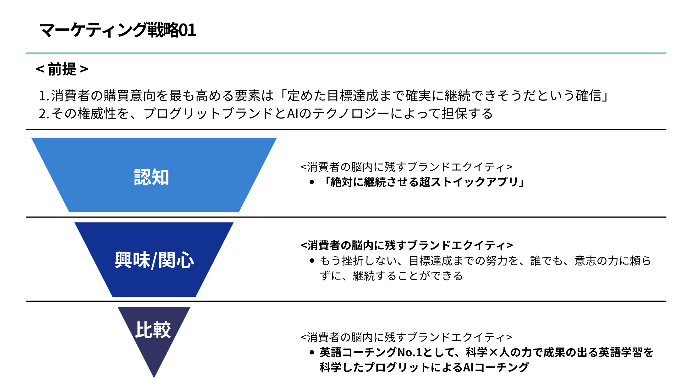
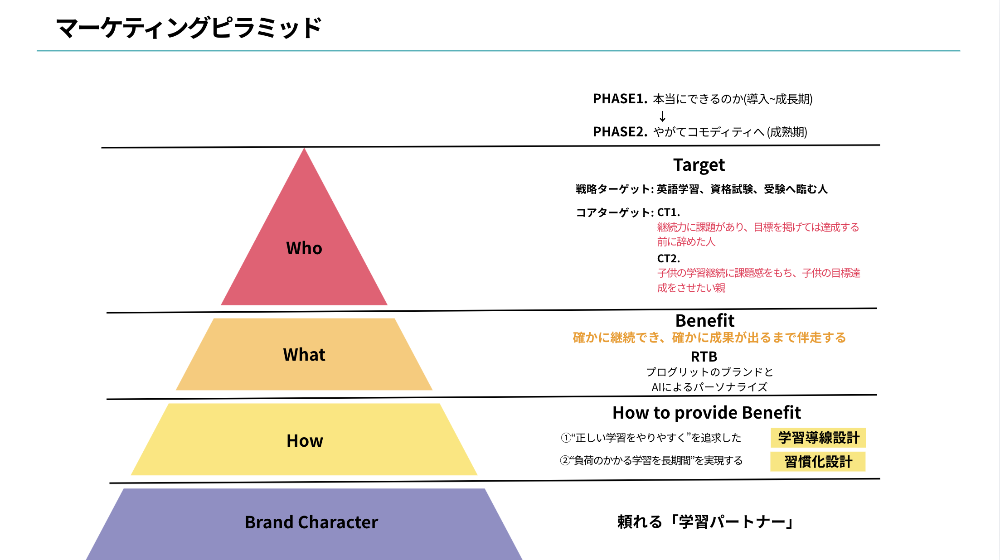
要件定義
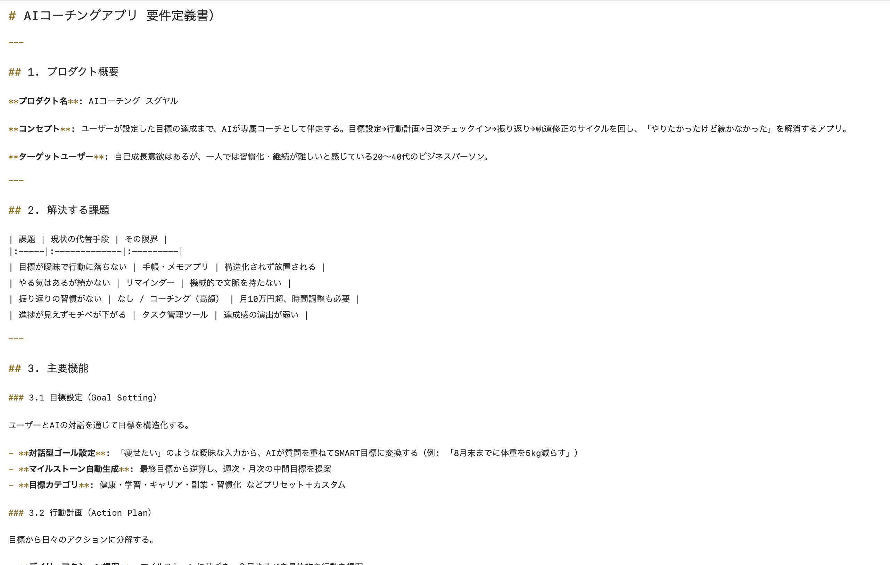
コーディング
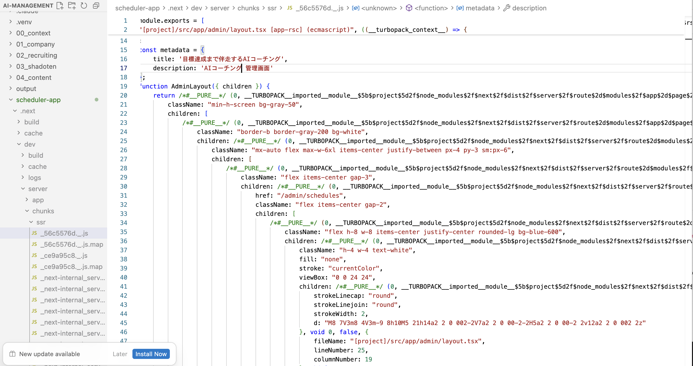
LP制作
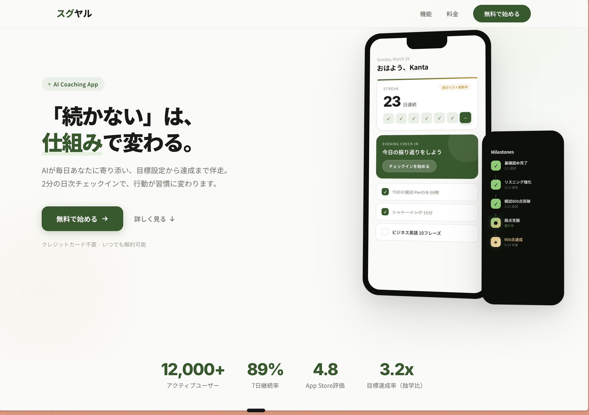
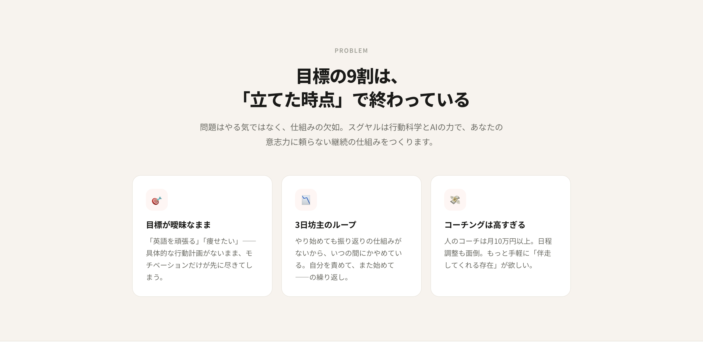
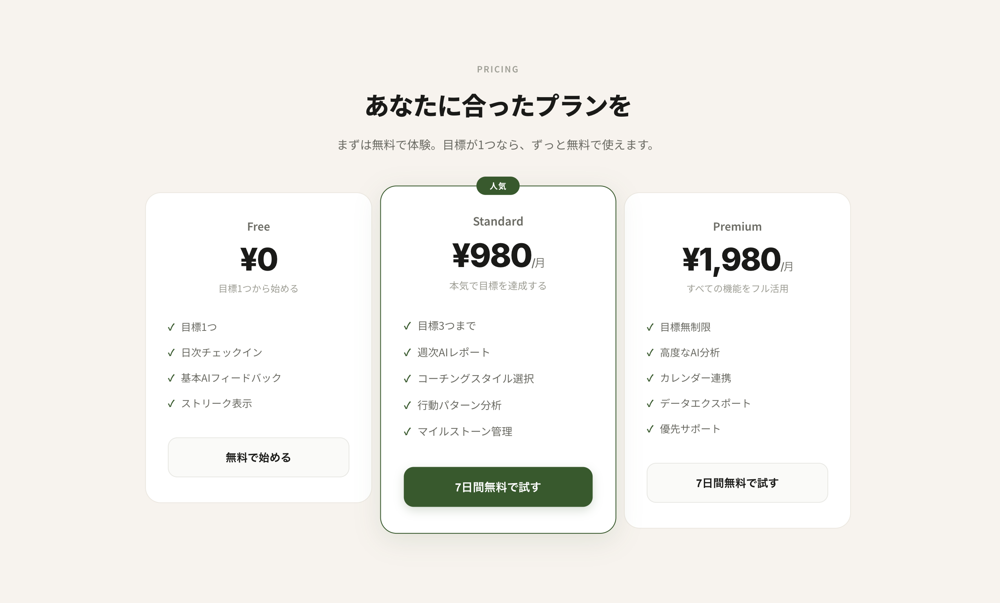
プロダクト完成
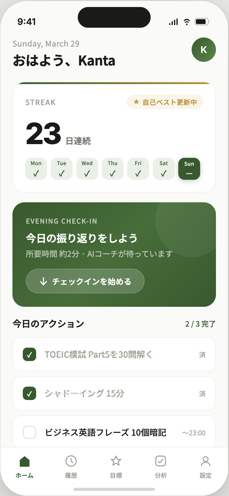
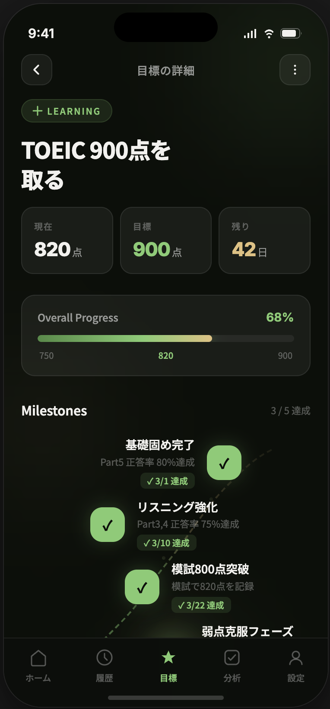
SPECIAL LECTURE
代表・岡田祥吾による
「就活の勝ち方」
特別講座
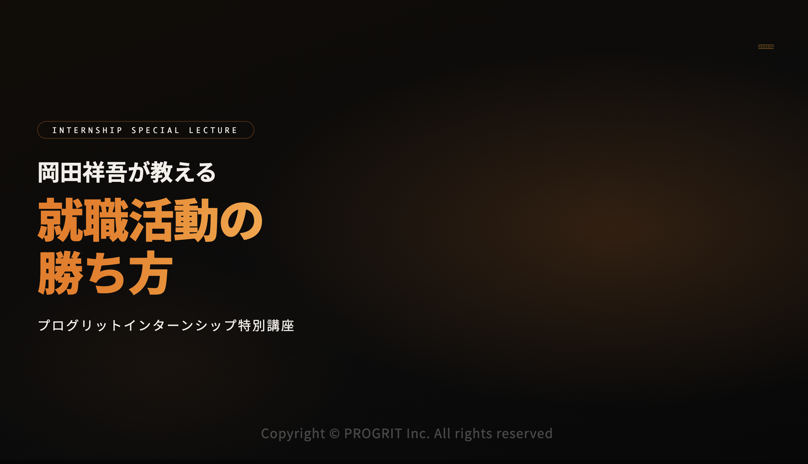
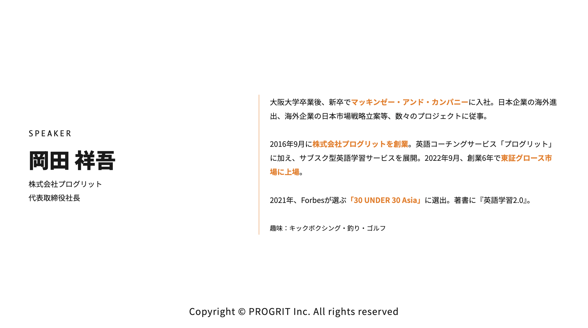
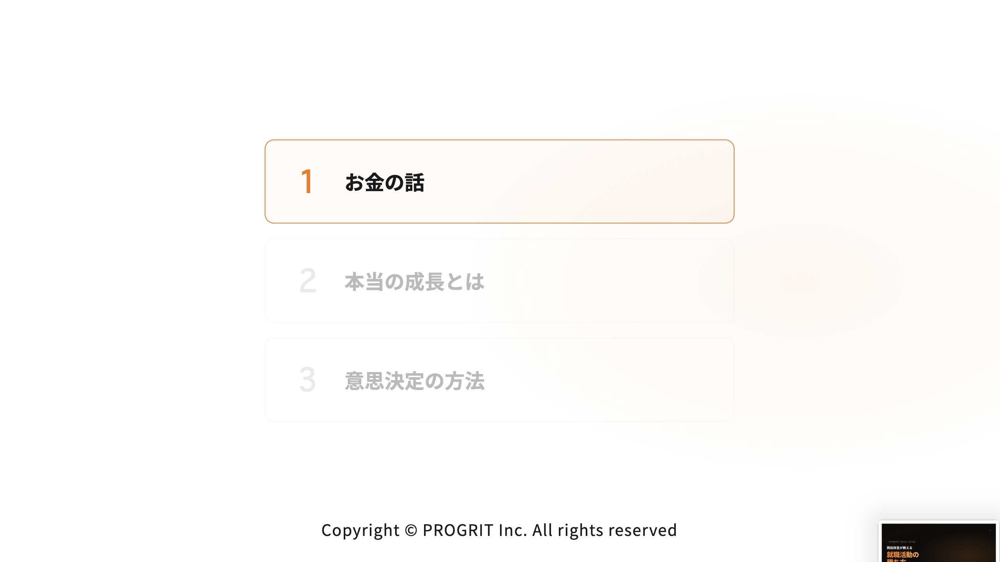
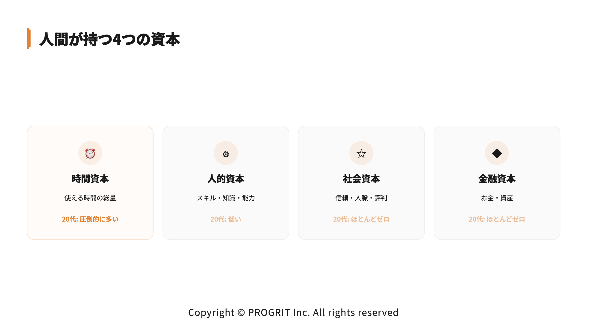
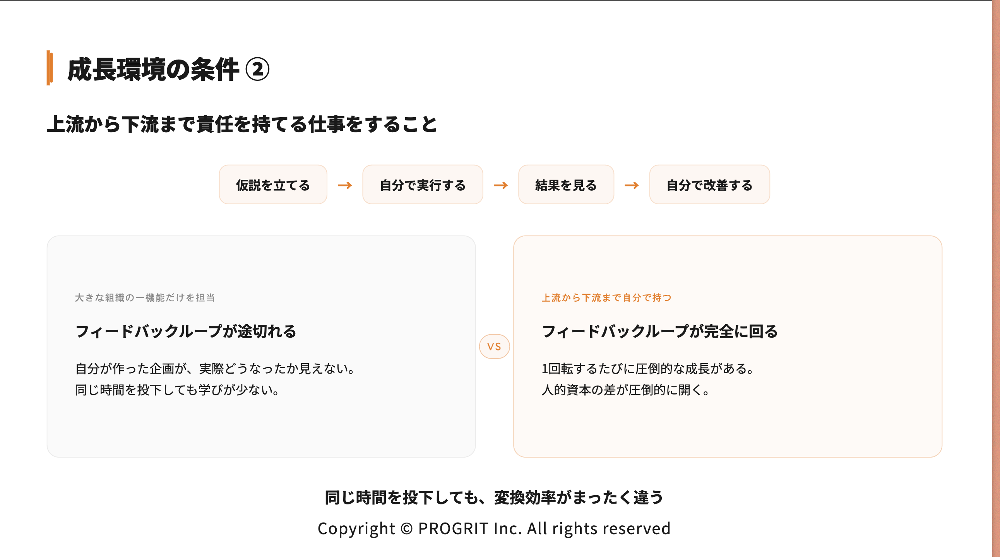
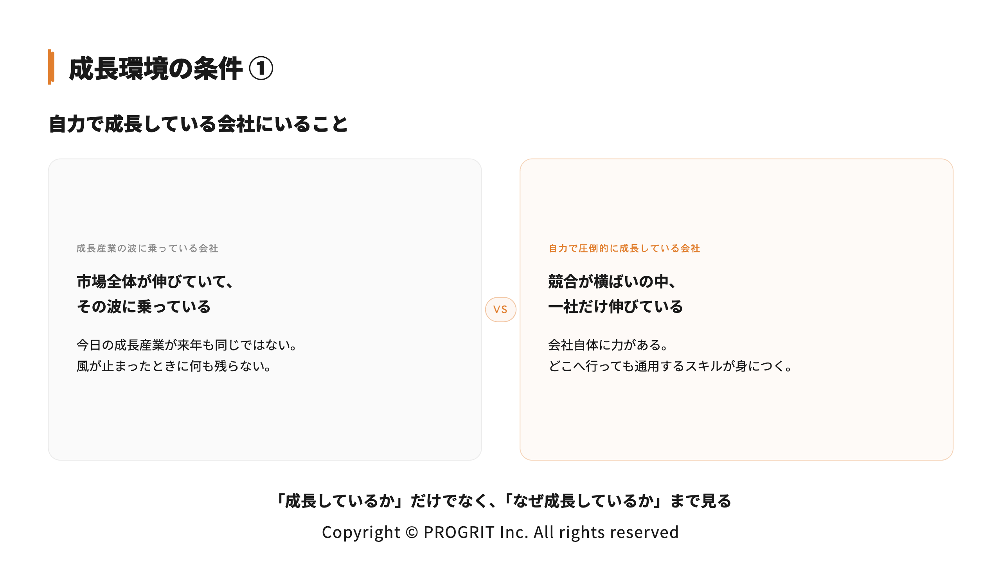


コンサル・大企業志望で、今後の就活インターンで有利になりたい人
まだ就活の軸が固まり切っていない人
AI時代の働き方を体感したい人
東京
(東京)
大阪
(大阪)
※ 定員に達し次第、締め切ります / ※ 交通費支給